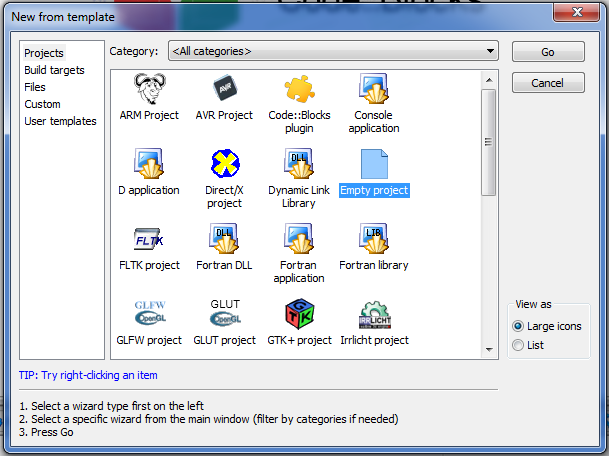

Ce trebuie să știi pentru a învață SDL2?
l POO
l C++
Ce este SDL2?
SDL2 = API (Application Programmeras Interface)
* API - interfață destinată programării aplicațiilor
Ce face SDL2?
pentru a utiliza lucruri că: grafica, sunet, tastatură, joystick-uri etc.
aveți nevoie de un API
aici intervine SDL2, ia toate aceste caracteristici și le transformă astfel încât să poată interacționa cu C++
pentru a-l folosi trebuie să îl INSTALAȚI
SDL2 conține 3 tipuri de fișiere:
l fișierele header (Library.h)
l fișierele library (Library.lib)
l fiesierele binary (Library.dll)
EXPLICAȚII PAS CU PAS PENTRU A INSTALĂ SDL2:
1. Trebuie să descarci fișierele conținute de SDL2. Le vei găsi pe toate AICI
dezarhiveaza fișierul
acolo trebuie să fie un folder denumit SDL2-2.0.3
În folderul respectiv cele mai important este i686-w64-mingw32, care sontine librăria pentru 32biti
Copie conținutul folderului într-un fișier creat de ține
(în acest tutorial voi pune conținutul fișierului în C:\mingw_dev_lib)
2. Pornește code::blocks și fă un proiect nou

3. Du-te în proprietăți
4. Du-te în build options
5. Du-te în search directories -> compiler
Apăsa ADD, du-te în fișierul unde ai extras bibliotecă, du-te în folderul include și selectează folderul SDL2
6. Du-te în search directories -> linker
Apăsa ADD, du-te în fișierul unde ai extras bibliotecă și selectează folderul lib
7. du-te în linker settings
Aiici trebuie să mergi în linker settings și să copii în fereastră cu aother linker options” acest rând:
-lminqw32 -lSDL2main -lSDL2
8. Apăsa okay, du-te înapoi la project properties, în build targets și selectează la build type: console application
9. Când aplicația rulează trebuie să copii toate fișierele din folderul bin în:
folderul unde aplicația rulează
folderul proiectului
10. Succes la implementat